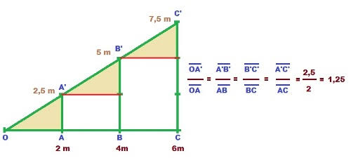

Teorema de Tales
Proporciones y semejanza de triángulos.
Un poco de historia
En el siglo VI a. C., Tales de Mileto midió la altura de la Gran Pirámide usando la proporción de las sombras. Aplicó la idea de que a la misma hora, la relación entre altura y sombra es constante.
La fórmula

Si una recta paralela corta los lados de un triángulo, se forman segmentos proporcionales.
A / a = B / b
Calculadora de proporciones
Resuelve la proporción: a / b = c / x
Introduce a, b y c. La calculadora te dará el valor de x.
Video explicativo
Créditos: Daniel Carreon